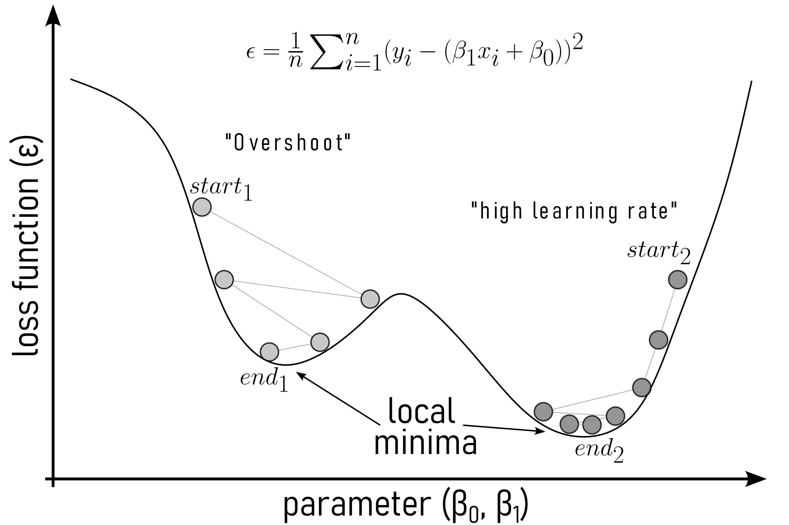
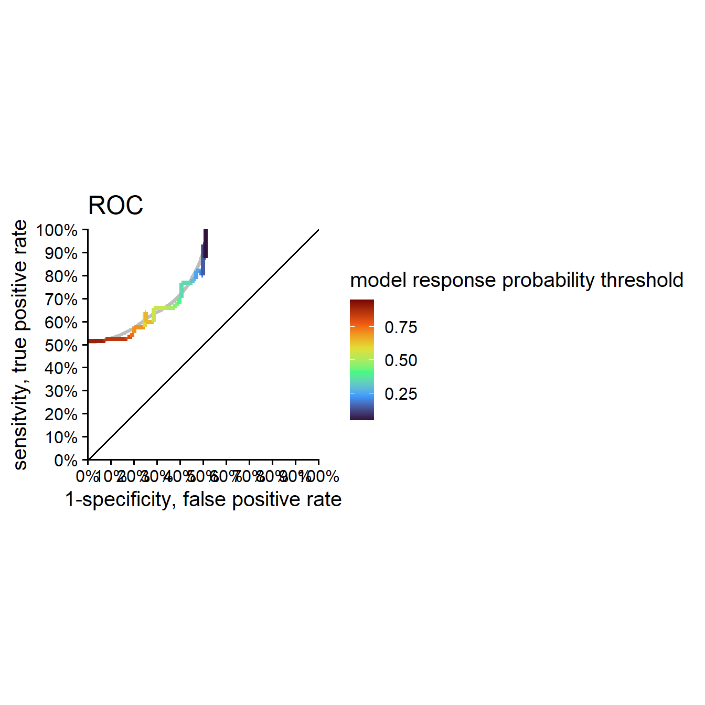

Regression Analysis
Linear Regression
\[\begin{align} y = \beta_0 + \beta_1 \cdot X \label{linreg} \end{align}\]
Residuals

The computation of the residuals is based on \(\eqref{rss}\) to the residual sum of squares.
\[\begin{align} RSS = \frac{1}{n} \sum_{i=1}^{n} (y_i - (\beta_1 x_i+\beta_0))^2 \label{rss} \end{align}\]
Gradient Descent (Ruder 2016)

Model Evaluation and Interpretation

\[\begin{align} r^2 = 1- \frac{RSS}{SSE} \label{r2} \end{align}\]

\[\begin{align} r^2_{adjusted} = 1 - (1-r^2)\frac{n-1}{n-k-1} \label{r2adj} \end{align}\]
Call:
lm(formula = diameter ~ rpm, data = drive_shaft_rpm_dia)
Residuals:
Min 1Q Median 3Q Max
-0.89501 -0.19690 -0.01096 0.21917 1.00742
Coefficients:
Estimate Std. Error t value Pr(>|t|)
(Intercept) 2.5000000 0.1406190 17.78 <2e-16 ***
rpm 0.0095000 0.0001399 67.89 <2e-16 ***
---
Signif. codes: 0 '***' 0.001 '**' 0.01 '*' 0.05 '.' 0.1 ' ' 1
Residual standard error: 0.3126 on 498 degrees of freedom
Multiple R-squared: 0.9025, Adjusted R-squared: 0.9023
F-statistic: 4610 on 1 and 498 DF, p-value: < 2.2e-16

Hypostesis testing in linear regression
Null Hypothesis (H0): \(\beta_1 = 0\)
Alternative Hypothesis (Ha): \(\beta_1 \neq 0\)
| term | estimate | std.error | statistic | p.value |
|---|---|---|---|---|
| (Intercept) | 2.500 | 0.141 | 17.779 | 0.000 |
| rpm | 0.010 | 0.000 | 67.895 | 0.000 |
| r.squared | adj.r.squared | statistic | p.value | df | df.residual | nobs |
|---|---|---|---|---|---|---|
| 0.902 | 0.902 | 4,609.692 | 0.000 | 1.000 | 498.000 | 500.000 |
Multiple linear regression
Characteristic |
Overall |
A |
B |
C |
p-value |
|---|---|---|---|---|---|
| rpm | 999 (932, 1,068) | 993 (923, 1,061) | 995 (927, 1,074) | 1,012 (946, 1,068) | |
| diameter | 11.95 (11.30, 12.66) | 11.90 (11.24, 12.51) | 11.98 (11.30, 12.67) | 12.01 (11.41, 12.77) | |
| feed | 40.01 (39.34, 40.67) | 39.98 (39.34, 40.63) | 39.91 (39.34, 40.65) | 40.05 (39.37, 40.78) | |
| 1
Median (Q1, Q3) |
|||||


\[\begin{align} Y \sim rpm + feed+ site \label{mlmmodel} \end{align}\]
Characteristic |
Beta |
95% CI 1 |
p-value |
|---|---|---|---|
| rpm | 0.00 | 0.00, 0.01 | <0.001 |
| feed | 0.44 | 0.29, 0.58 | <0.001 |
| site | |||
| A | 0.00 | ||
| B | 0.09 | -0.02, 0.20 | 0.11 |
| C | 0.08 | -0.03, 0.20 | 0.15 |
| 1
CI = Confidence Interval |
|||


Logistic Regression

\[\begin{align} p = \frac{1}{1+e^{-(\beta_0 + \beta_1x)}} \label{sigmoid} \end{align}\]
The ordinary linear regression equation is shown in \(\eqref{linreg}\).
If for \(y\) the probabilities \(P\) are used they may be \(>1\) or \(<0\) which is not possible for \(P\).
To overcome this issue, the odds of \(P = \frac{P}{1-P}\) are taken.
\[\begin{align} \frac{P}{1-P} &= \beta_0 + \beta_1x \label{logreg01} \\ \frac{P}{1-P} &\in {0 \ldots + \infty} \nonumber \end{align}\]
Restricted variables are not easy to model why \(\eqref{logreg01}\) is expanded to \(\eqref{logreg02}\).
\[\begin{align} \log\left( \frac{P}{1-P}\right) &= \beta_0 + \beta_1x \label{logreg02} \end{align}\]
\(\beta_0 = 1\) and \(\beta_1 = 1\)

\(\beta_0 = 1\) and \(\beta_1 = 0 \ldots 5\)

\(\beta_0 = 1\) and \(\beta_1 = -5 \ldots 0\)

\(\beta_0 = 0\ldots 5\) and \(\beta_1 = 1\)

\(\beta_0 = -5 \ldots 0\) and \(\beta_1 = 1\)

Maximum Likelihood Estimation (MLE)
In contrast to the cost function for linear regression \(\eqref{mse}\), \(\hat{y_i}\) in logistic regression is a non-linear function \(\eqref{yhatlog}\).
\[\begin{align} \hat{y} = \frac{1}{1+e^{-z}} \label{yhatlog} \end{align}\]
Which is why the Maximum Likelihood Estimator is used.
Using the MLE basically means, to try different models (with different model parameters) that maximize the likelihood of the parameters being true. Because it is easier to look for minima (gradient descent), a loss function is formulated that can be used as a loss function.
Modeling Production Data

Characteristic |
N = 500 1 |
|---|---|
| feed | 19.89 (18.55, 21.40) |
| pass_1_fail_0 | |
| 0 | 256 (51%) |
| 1 | 244 (49%) |
| 1
Median (Q1, Q3); n (%) |
|
Characteristic |
log(OR) 1 |
95% CI 1 |
p-value |
|---|---|---|---|
| feed | 0.46 | 0.35, 0.57 | <0.001 |
| 1
OR = Odds Ratio, CI = Confidence Interval |
|||
\[\begin{align} \log(\frac{P}{1-P}) &= -9.17 + 0.46x \label{logregor} \\ \frac{P}{1-P} &= e^{-9.17 + 0.46x} \label{logrege} \end{align}\]
Therefore the models explains what the odds \(\frac{P}{1-P}\) are for a drive shaft to be FAIL or PASS for a given feed.

residuals

Mc Fadden \(R^2\)
\[\begin{align} R^2 = 1- \frac{\log(L_{model})}{\log(L_{null})} \label{mcfadden} = 0.1198876 \end{align}\]
It compares the model to the null-model. It is much smaller then the coefficient of determination with values ranging between \(0.2 \ldots 0.4\) already indicating a good model fit in practice.
Confusion Matrix

- True Positive (TP): The number of positive instances correctly classified as positive.
- False Positive (FP): The number of negative instances incorrectly classified as positive (also known as Type I error).
- True Negative (TN): The number of negative instances correctly classified as negative.
- False Negative (FN): The number of positive instances incorrectly classified as negative (also known as Type II error).
Accuracy
\[\frac{TP + TN}{TP+FP+TN+FN}\]
- Definition
-
The ratio of correctly predicted instances (both true positives and true negatives) to the total instances.
- Interpretation
-
Accuracy measures the overall correctness of the model. It indicates the proportion of total predictions that were correct. While accuracy is useful, it can be misleading in cases of imbalanced datasets where one class is more frequent than the other.
Precision
\[\frac{TP}{TP+FP}\]
- Definition
-
The ratio of true positive instances to the total instances predicted as positive.
- Interpretation
-
Precision, also known as positive predictive value, measures the accuracy of positive predictions. It is the proportion of correctly identified positive instances out of all instances predicted as positive. High precision indicates a low false positive rate.
Recall
\[\frac{TP}{TP+FN}\]
- Definition
- The ratio of true positive instances to the total actual positive instances.
- Interpretation
-
Recall measures the models ability to correctly identify all positive instances. It is the proportion of correctly identified positive instances out of all actual positive instances. High recall indicates a low false negative rate.
Specificity
\[\frac{TN}{TN+FP}\]
- Definition
-
The ratio of true negative instances to the total actual negative instances.
- Interpretation
-
Specificity measures the models ability to correctly identify negative instances. It is the proportion of correctly identified negative instances out of all actual negative instances. High specificity indicates a low false positive rate.
F1 Score
\[2\times\frac{Precision\times Recall}{Precision + Recall}\]
- Definition
-
The harmonic mean of precision and recall.
- Interpretation
-
The F1 Score combines precision and recall into a single metric. It provides a balance between the two, particularly useful when you need to take both false positives and false negatives into account. The F1 score is especially helpful when the class distribution is uneven or when you seek a balance between precision and recall.
Summary on metrics
- Accuracy is best for overall performance but can be misleading for imbalanced datasets.
- Precision is crucial when the cost of false positives is high.
- Recall is important when the cost of false negatives is high.
- Specificity complements recall, providing insight into the true negative rate.
- F1 Score offers a balanced measure, useful when both precision and recall are important.
Confusion Matrix in practice

Accuracy, correct classification rate, proportion of correct predictions

Precision
Recall, True positive rate, sensitivity, hit rate, detection rate

Specificity, true negative rate, selectivity, true negative fraction, 1 - false positive rate

F1 Score, harmonic mean of precision and recall
Receiver Operator Curve (ROC)

METRICSSS!!!!!

References
Ruder, Sebastian. 2016. An Overview of Gradient Descent Optimization Algorithms. http://arxiv.org/pdf/1609.04747.pdf.